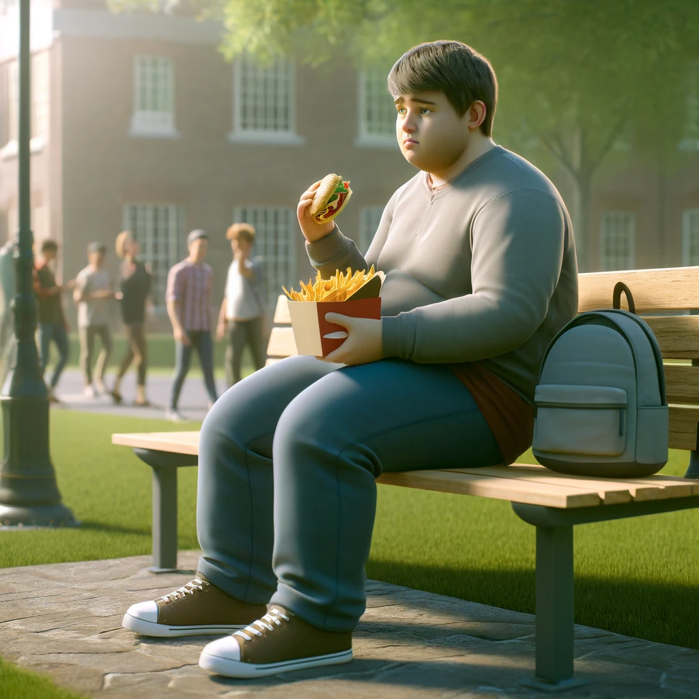

Spreading awareness on mental and physical well-being of highschool students..
The habits we inculcate in high school and in college are ones that we apply during the rest of our lives...
Guidelines from the National Institute of Mental Health:
As per a study in the Indian Journal of Applied Science, children who go to private schools face far more stress...
Findings from the study:
Source: Read More
In India, student suicide rates have increased by 4% in 2024 compared to 2023...
Key issues identified:
Source: Read More
It is also extremely necessary that students maintain a healthy physical state...
CDC Report Findings:
Source: Read More
The issues we identified regarding student physical activity were lack of motivation and time...
Inspired by Duolingo founder Luis Von Ahn, we wanted to make learning and fitness as addictive as social media.
Watch the TED Talk here: